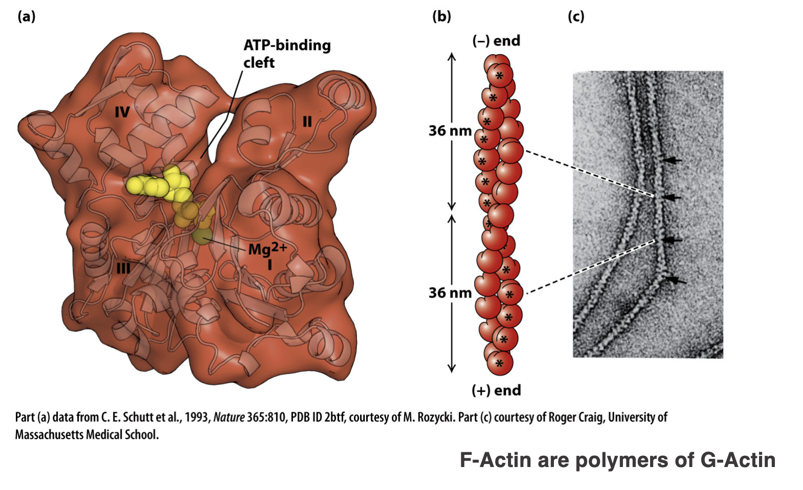
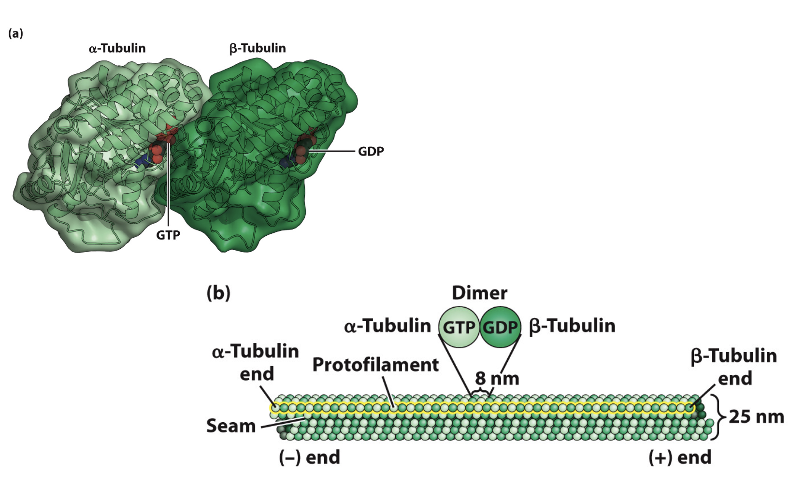
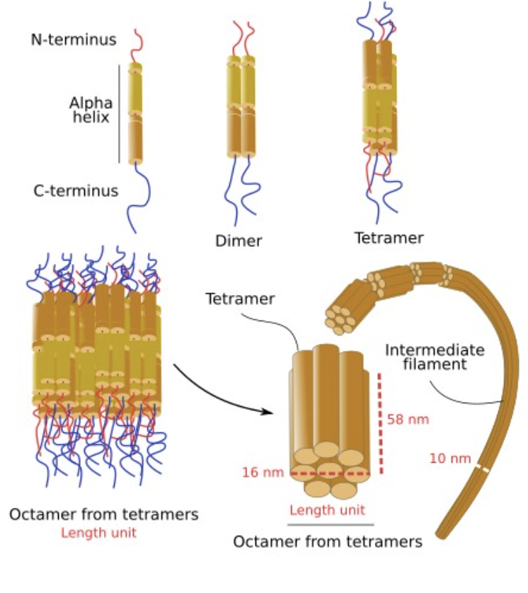

Quick Navigation
Jump directly to a structural component:
Microfilaments
Introduction
Microfilaments are the thinnest fibers of the cytoskeleton. They are flexible and mainly located near the cell membrane, where they help the cell change shape and move.
Proteins Involved
Actin is the main protein that forms microfilaments by linking together into long chains.

Function
Microfilaments support cell shape and are important for movement and mechanical force. They help with muscle contraction, cell crawling, and cytokinesis during cell division.
Microtubules
Introduction
Microtubules are hollow tube-like structures that are larger and more rigid than microfilaments. They act like internal “highways” for movement and organization inside the cell.
Proteins Involved
Microtubules are made of alpha and beta tubulin proteins that assemble into hollow tubes.

Function
Microtubules help maintain cell shape, separate chromosomes during cell division, and transport organelles and vesicles. They also form cilia and flagella for cell movement.
Intermediate Filaments
Introduction
Intermediate filaments provide strong, durable support within the cell. They are more stable than other cytoskeletal elements and help cells resist mechanical stress.
Proteins Involved
- Keratins (in epithelial cells)
- Vimentin (in connective tissue cells)
- Lamins (in the nuclear envelope)

Function
Intermediate filaments give the cell tensile strength and help it resist stretching and tearing. They also stabilize the nucleus and maintain overall cell integrity under stress.